Install
- Download the .sbs for your Substance Designer version.
- Edit › Preferences › Projects › Library: add the folder holding it (not recursive). The nodes appear under SD_Toolbox_19, with ♠ in front of their names.
- Open the package for the ♠ SD Toolbox 19 Showroom graph: one demo of each node.
The 15 nodes
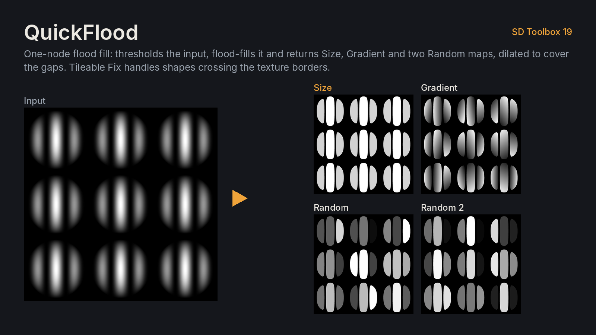
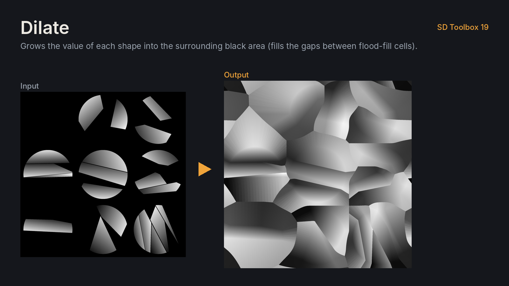
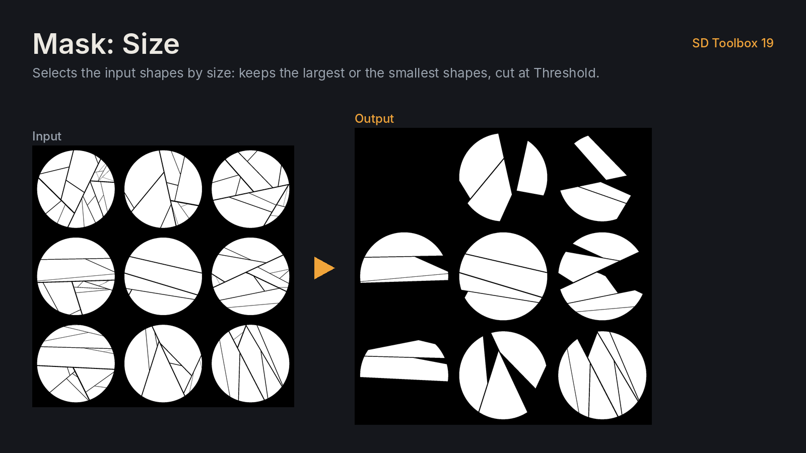
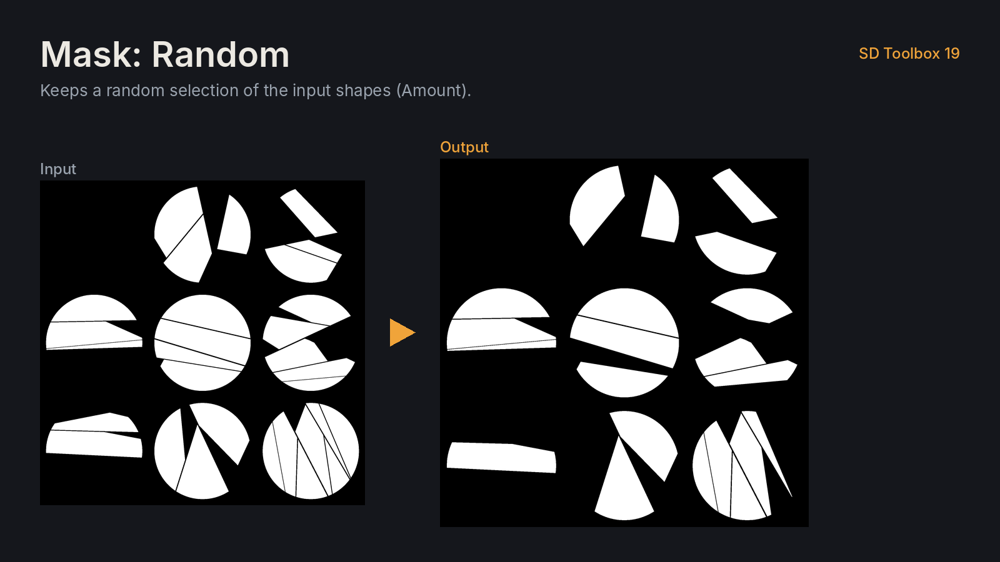
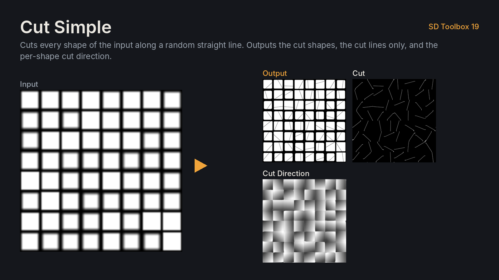
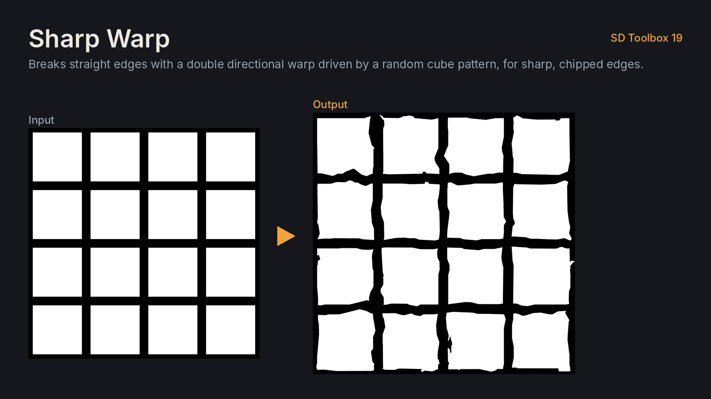
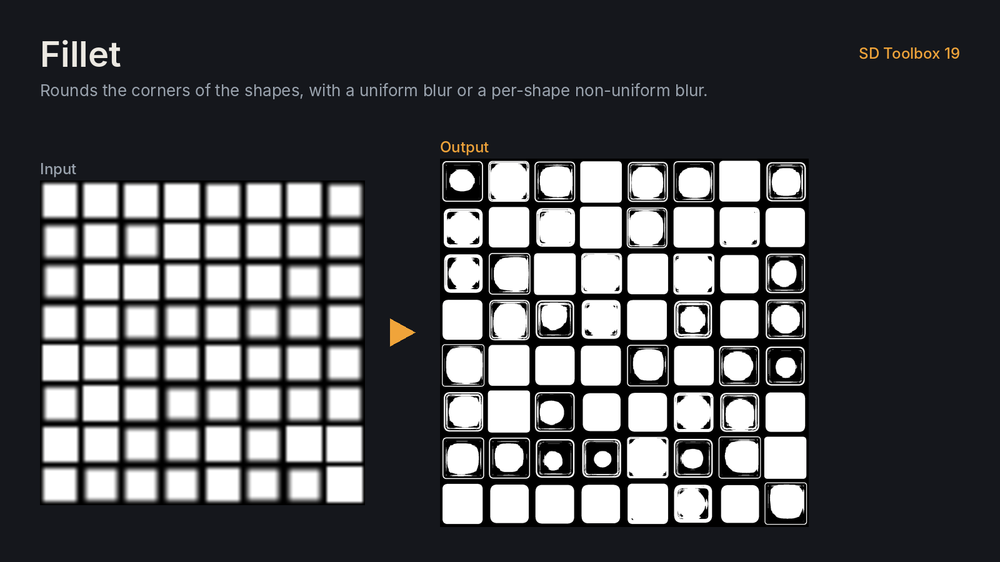
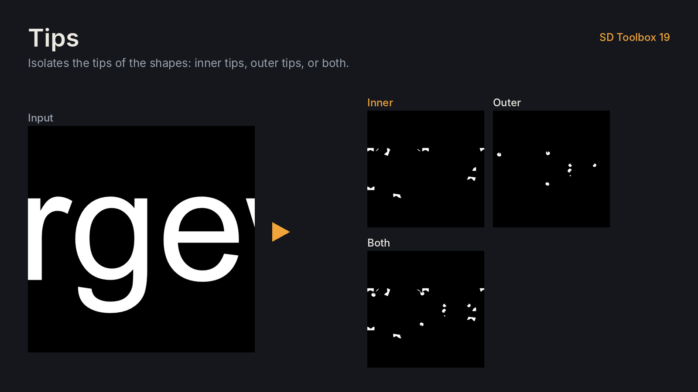
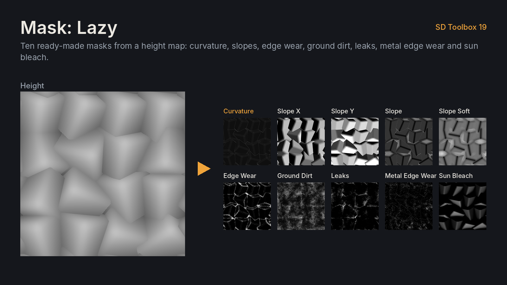
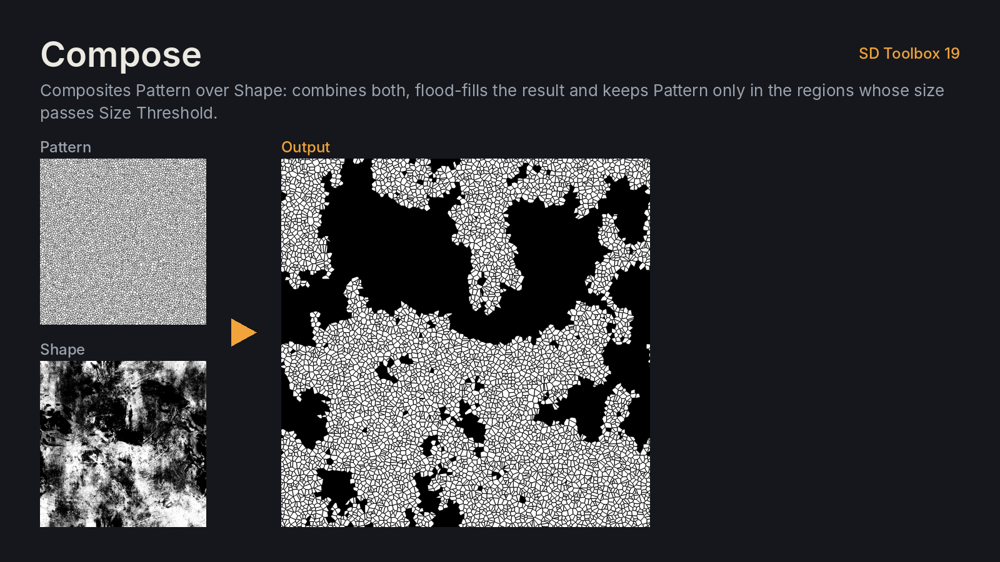
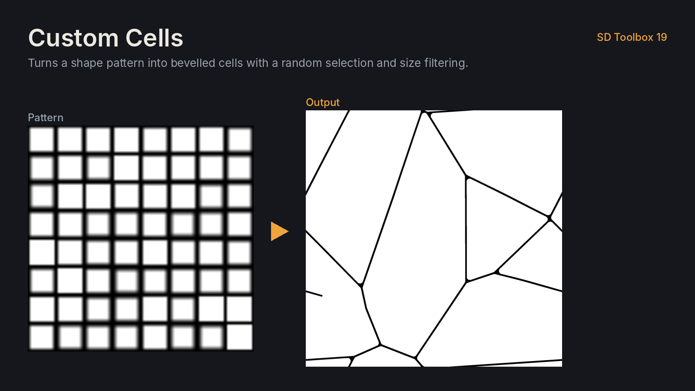
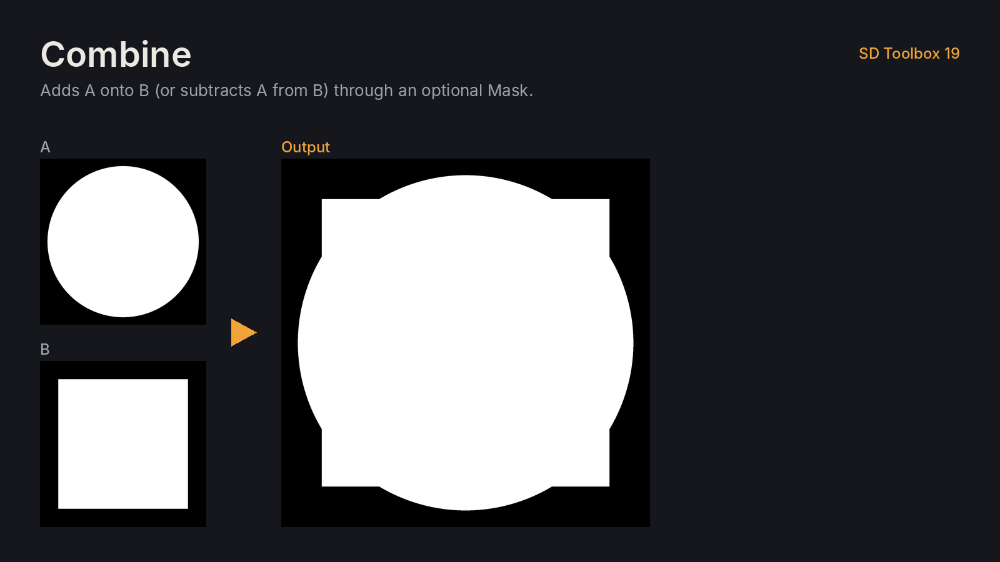
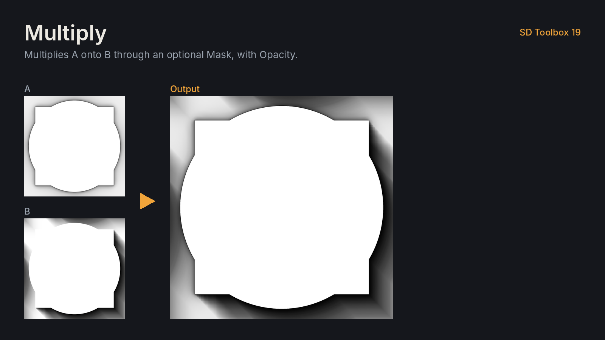
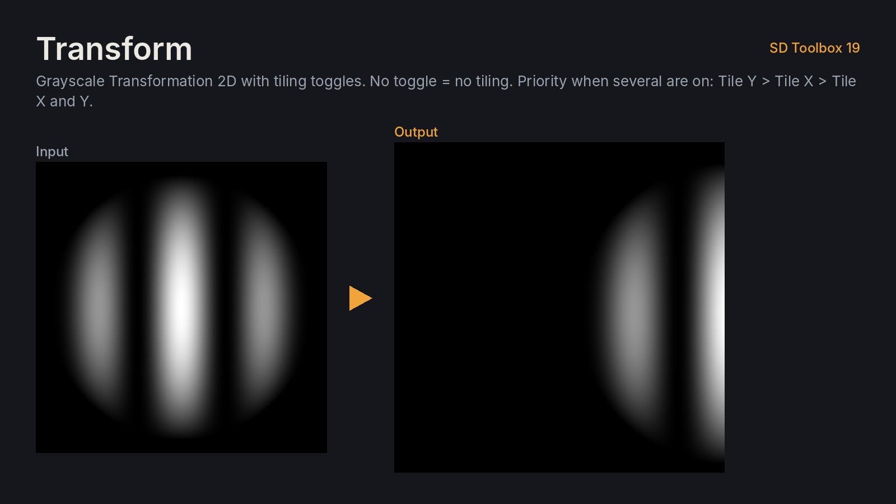
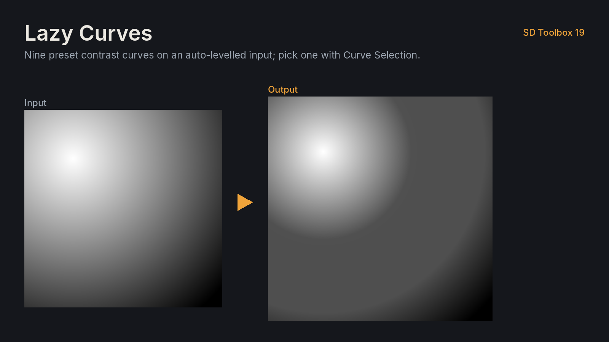